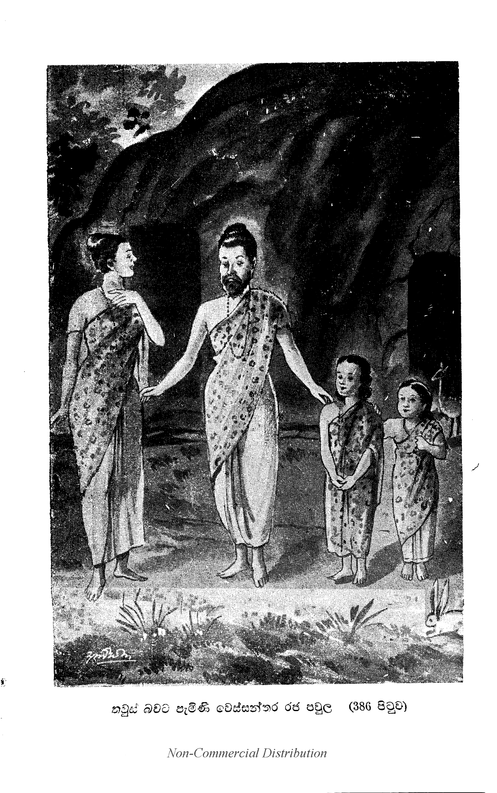

සිංහනාද ප්රශ්නය
“ස්වාමීනි, නාගසෙනයන් වහන්ස, ලෝකයෙහි බුදුවරයෝත් දක්නා ලැබෙති. පසේබුදුවරයෝත් දක්නා ලැබෙති. සුගතශ්රාවකයෝත් දක්නා ලැබෙති. චක්රවර්ති මහරජහුත් දක්නා ලැබෙති. ප්රදෙශමහරජහුත් දක්නා ලැබෙති. දිව්යබ්රහ්මමනුෂ්යයෝත් දක්නා ලැබෙති. සධනික සත්වයෝත් දක්නා ලැබෙති. නිර්ධනික සත්වයෝත් දක්නා ලැබෙති. සුගතිසත්වයෝත් දක්නා ලැබේ.[1] ස්ත්රීහට පුරුෂලිඟු පහළ වීමත් දක්නා ලැබේ.1 සුකෘත දුෂ්කෘත කර්මවලුත් දක්නා ලැබේ.1 යහපත් නපුරු කර්මයන්ගේ විපාකූපභොගී වූ සත්වයෝත් දක්නා ලැබෙති. අණ්ඩජ වූ ජලාබුජ වූ සංසදෙජ වූ ඔපපාතික වූ සත්වයෝත් ඇත. අපාද වූ දිපාද වූ චතුප්පදික වූ බහුප්පදික වූ සත්වයෝත් ඇත. ලොකයෙහි යක්ෂයෝ ය, රාක්ෂසයෝ ය, කුම්භාණ්ඩයෝ ය, අසුරයෝ ය, දානවයෝ ය, ගන්ධර්වයෝ ය, ප්රෙතයෝ ය, පිසාචයෝ ය යන මොවුහුත් ඇත. කිඳුරෝ ය, මහෝරගයෝ ය, නාගයෝ ය, ගරුඬයෝ ය, සිද්ධයෝ ය, විද්යාධරයෝ ය යන මොහුත් ඇත. හස්තීහු ය, අශ්වයෝ ය, ගවයෝ ය, මීසරක්හු ය, ඔටුවෝ ය, කොටළුවෝ ය, තිරෙළුවෝ ය, එළුවෝ ය, මෘගයෝ ය, ශූකරයෝ ය, සිංහයෝ ය, ව්යාඝ්රයෝ ය, දිවියෝ ය, වලස්සු ය, කොක්නාවෝ ය, කරබානා වලස්සු ය. සුනඛයෝ ය, ශෘංගාලයෝ ය යන මොහුත් ඇත අනෙකප්රකාර වූ බොහෝ පක්ෂීහුත් ඇත. රන් රිදී මුතු මැණික් සංඛ ශිලා ප්රවාල ලොහිතංක මසාරගල්ල වෙළුරිය වීදුරු ස්ඵටික මාණික්ය යන මේ රත්නජාතියත් ඇත. කළුලොභ ය, තඹ ය, වටලොභය, කස්ලොහ ය යන මේ ලොහජාතියත් ඇත. කොමුපිළි ය, පටපිළි ය, කපුපිළි ය, සණපිළි ය, බංගාලේ පිළි ය, කම්බිලිපිළි ය, යන මේ වස්ත්රජාතියත් ඇත. හැල් වී ජාති ය, යව වී ජාති ය, තණජාති ය, කඵහමුජාති ය, සුදුහමුජාති ය, හොරවාල ය, මුං ය, මෑ ය, තල ය, කොල්ලු ය යන මේ ධාන්යජාතියත් ඇත. මූලගන්ධ ය, සාරගන්ධ ය, සුඹුළුගන්ධ ය, ත්වවගන්ධ ය, පත්රගන්ධ ය, පුෂ්පගන්ධ ය, ඵලගන්ධය සර්වසංහාරගන්ධ ය යන මේ සුගන්ධජාතියත් ඇත. තෘණ ලතා පැළ වෘක්ෂ ඔෂධී ඵල නදී පර්වත සමුද්ර මත්ස්ය කැසුප් යන මේ සියල්ලත් ලොකයෙහි ඇත. ස්වාමීනි, මේ කී තාක් දෙය හැර ලොකත්රයෙහි යම් දෙයක් නැත්තේ වී නම් ඒ නැති දෙය මට වදාළ හොත් සමර්ථසේකැ” යි කීහ.

එකල නාගසෙනස්ථවිරොත්තමයානෝ-(325) “තීණිමානි මහාරාජ, ලොකෙ නත්ථි. කතමානි තීණි? සචෙතනා වා අචෙතනා වා අජරාමරා ලොකෙ නත්ථි. සංඛාරා නං නිච්චතා නත්ථි. පරමත්ථෙන සත්තුපලද්ධී නත්ථි. ඉමානි ඛො මහාරාජ තීණි ලොකෙ නත්ථි” ති.
යනුවෙන් “මහරජානෙනි, මේ ත්රිවිධ වූ ධර්මකෙනෙක් ලොකත්රයයෙහි ම නැත්තේ ය. කවර නම් ත්රිවිධ ධර්මකෙනෙක් ද? යත්- දිව්ය බ්රහ්ම මනුෂ්ය තිරශ්චීනාදි සචෙතනික වූ හෝ වෘක්ෂපර්වතාදි අචෙතනික වූ හෝ ජරාමරණ නො වන්නා වූ අජරාමරයක් ලොකයෙහි නැත්තේ ය. ස්පර්ශ වෙදනා සංඥා චෙතනාදි සර්වසංස්කාරයන්ගේ නිත්යතාවෙක් නැත්තේ ය. පරමාර්ථයෙන් සත්තුපලද්ධියෙක් නැත්තේ ය. මහරජානෙනි, මේ ත්රිවිධධර්මයෝ ලොකයෙහි නැතැ” යි වදාළසේක. “සාධු, සාධු, ස්වාමීනි, නාගසෙනයන් වහන්ස, පණ්ඩිතජනාහෘදයානන්ද කෙරෙමින් සිංහනාදයක් කර වදාළසේක. ලොකයෙහි අජරාමර දෙයකු දු නැත්තේ ය. සංස්කාරයන්ගේ නිත්යතාවකුත් නැත්තේ ය. පරමාර්ථ වශයෙන් විමසා බැලූ කල ලැබිය යුතු සත්වයෙකු දු නැත්තේ ය. යහපත, ස්වාමීනි, මෙසේ මේ ප්රශ්නයත් මම එසේ ම පිළිගන්නෙමි” යි කීහ.
සිංහනාදප්රශ්නය නිමි.
-
ලැබෙති. ↑